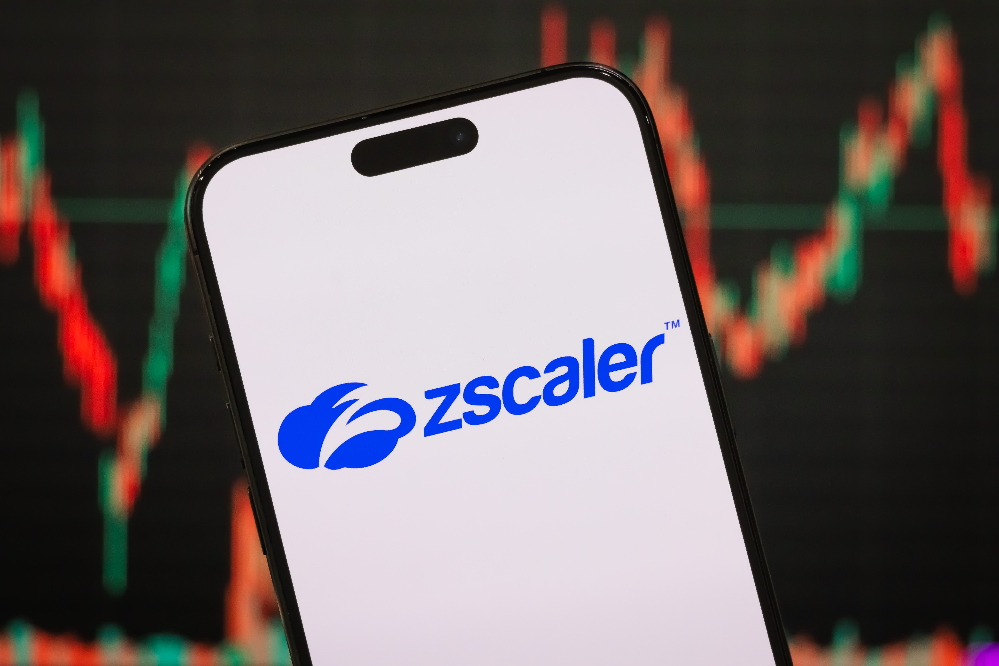

Информационное агентство Bloomberg со ссылкой на источники, знакомые с ходом переговоров, сообщило в пятницу, что CrowdStrike обсуждает приобретение Zscaler — одного из лидеров «нулевого доверия» и облачной безопасности. Отдельного официального анонса компаний нет: CrowdStrike от комментария отказалась, Zscaler на запрос CNBC не ответила. Речь идёт о переговорах, а не о подписанном соглашении, и, по данным Reuters, стороны могут так и не договориться.
Капитализация CrowdStrike сейчас — около $235 млрд (бумаги за год примерно удвоились на волне ИИ-бума), Zscaler — около $32 млрд (за год бумаги потеряли 13%). В сумме это потенциальная компания стоимостью около $267 млрд. Реакция рынка была показательной: акции Zscaler после закрытия торгов подскочили на 16–18%, а самой CrowdStrike — снизились более чем на 8%, то есть рынок оценил щедрость потенциального предложения скептически.
Если сделка состоится, она затмит даже покупку Wiz компанией Google за $32 млрд и покупку Splunk компанией Cisco за $28 млрд. Ландшафт отрасли и так стремительно консолидируется: Palo Alto Networks только что закрыла сделку с CyberArk на $25 млрд и теперь стоит около $282 млрд. CrowdStrike же до сих пор приобретала в основном небольшие компании: в этом месяце она объявила о покупке платформы наблюдаемости для ИИ-агентов Fiddler AI и платформы доверия к ИИ Dreadnode — обе сделки шли под лозунгом защиты автономных ИИ-агентов.
Обе компании сегодня продают себя прежде всего как ИИ-компании безопасности: Falcon от CrowdStrike делает ставку на автономного аналитика-агента, Zscaler — на защиту облачных и LLM-нагрузок, через которые теперь проходит трафик сотрудников с ИИ-ассистентами. Покупка Zscaler дала бы CrowdStrike редкое сочетание: контроль и над конечными точками, и над сетевым периметром — то есть над всеми местами, где ИИ-агенты сегодня и работают, и ошибаются.
Пока это утечка, а не факт сделки: цифры переговоров не раскрываются, и источники подчёркивают — гарантия отсутствует.